Food that's bought gets forgotten - and a full pantry can still feel like nothing to cook
Ingredients pushed to the back of a fridge or drawer spoil unnoticed. Even when nothing has gone bad yet, a fridge full of unrelated items produces a kind of choice paralysis that pushes people toward takeout instead of cooking what they already own.
Who we designed for
Budget-conscious students, international students adapting to a new grocery ecosystem, and people who regularly cook for a household.
Why it's frustrating
Existing recipe apps match recipes to taste, not to what's already sitting in your kitchen and about to expire.
Our bet
If the app already knows what's in your pantry and how soon it spoils, it should turn that inventory into a cookable suggestion - not you.
Six interviews, three recurring pain points
We interviewed budget shoppers, international students, and household cooks. Independent of who we talked to, three problems came up repeatedly.
Ingredients pushed to the back of a fridge or drawer spoil unnoticed - nobody wanted to waste food, they just lost track of what they had.
Faced with a fridge full of unrelated items, people described defaulting to takeout rather than figuring out what those items could become.
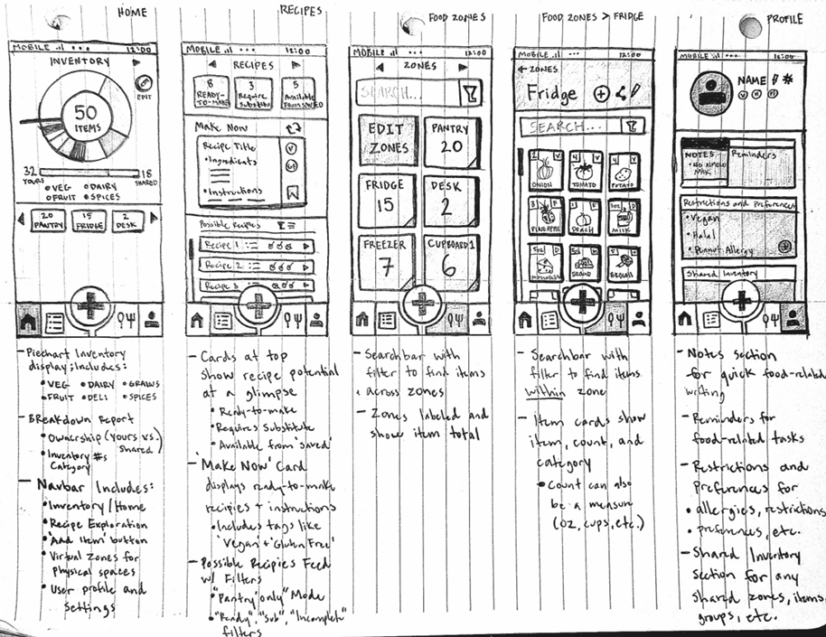
Three flows, tested in a critique session
We translated the "Use-It-or-Lose-It" direction into three distinct mobile flows and compared them for navigation, screen density, and clarity.
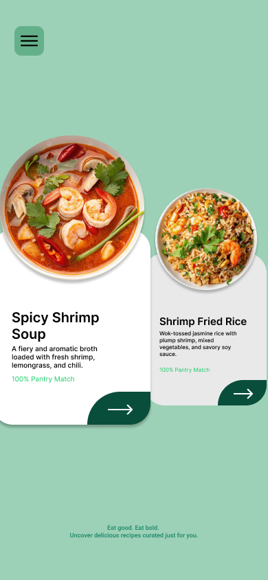
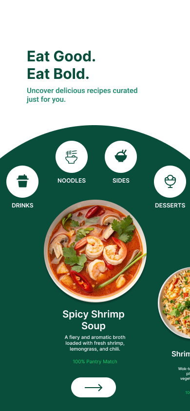
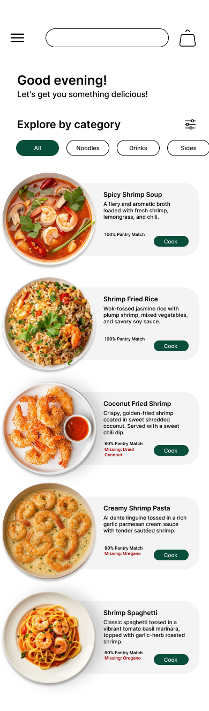
Why Flow 3 won
Flows 1 and 2 had an immediately understandable "pantry-first" concept, but large cards left few recipes visible and navigation was hard to discover. Flow 3 kept the clarity while fixing both: a list format that shows far more recipes per screen, with pantry-match percentage and missing ingredients surfaced directly on each card.
Kept from earlier flows
Large, appealing food imagery and an immediately legible "cook with what you have" concept.
Fixed in Flow 3
Explicit search + category filters, and a scannable list instead of space-hungry cards.
From flow to finished visual identity
The high-fidelity prototype developed Flow 3 into a full interactive app in Figma with a deep forest-green palette, color-coded expiration badges, and a recipe detail screen with ingredient availability icons and an inline substitute control using the three Realizations all combined together.
A working React + Firebase + Spoonacular app
Built as a React (Vite) single-page app deployed on Vercel, with Firebase Authentication and Firestore for the live pantry, and the Spoonacular API for recipe content.
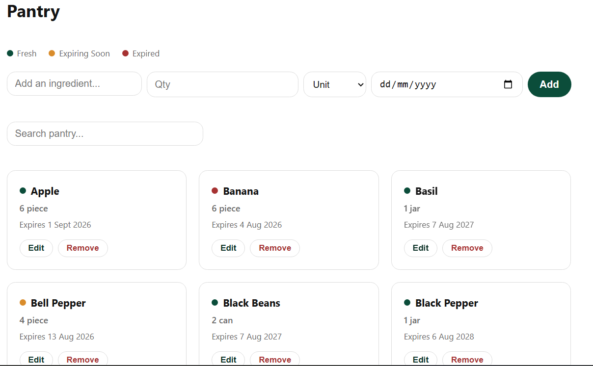
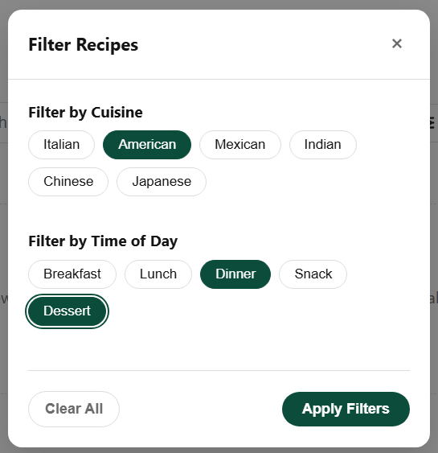
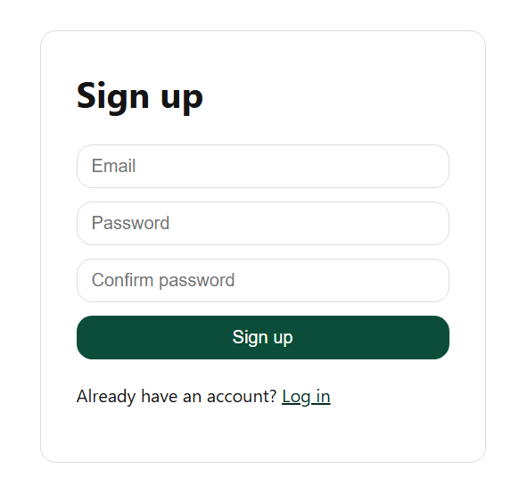
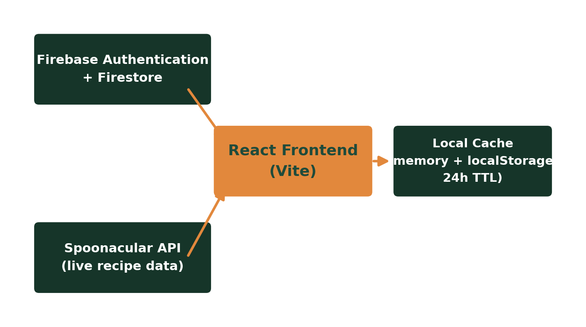
Five participants, four real-world tasks
We ran a moderated think-aloud study across signup, pantry logging, recipe discovery, and inventory-check scenarios, combining timed task metrics with a ten-item Likert survey.
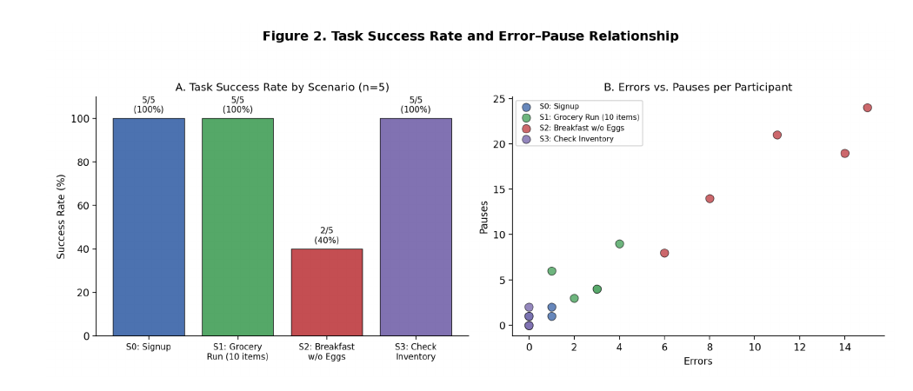
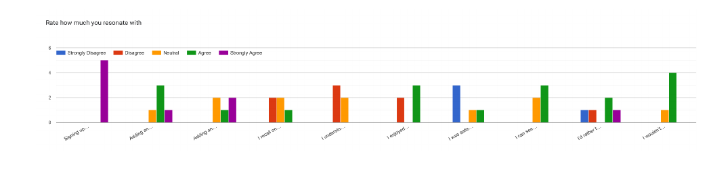
"I have to reset the filters since I'm not finding anything." - Participant 4
"Oh I can't see the possible substitutions if I don't have it already?" - Participant 2
What's Cookin', shipped
A live, deployed pantry and recipe app - sign up, log groceries with expiry dates, and get recipe suggestions that prioritize what's about to spoil.
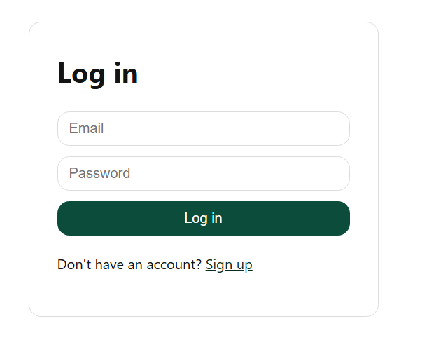
What we learned, and what's next
The core pantry-logging loop worked well. Recipe discovery is the clearest weak point - when the obvious path (search, filter, or substitute) doesn't return what a user needs, the app offers no graceful fallback.
Expiration entry
Add an icon, label, and quick-select date presets - the field currently has no visual affordance.
Broader filters
Add missing-ingredient count, ingredient exclusion, and difficulty filters beyond cuisine and time-of-day.
Independent substitutes
Let users browse what generally substitutes for an ingredient, not only what they already own.